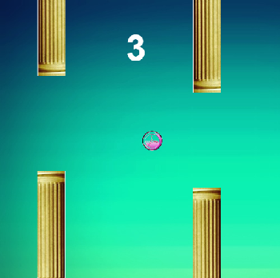
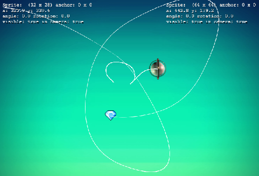
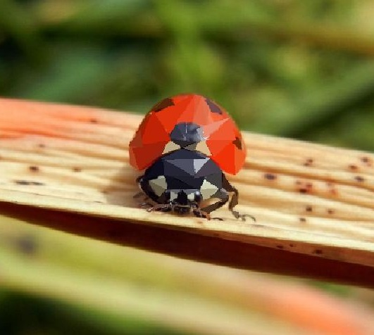

Jumpstart HTML 5 Game development with phaser
Programming games can be challenging, and often accompanies a steep setup curve. Leaving aside high profile games mostly done in C/C++, which require a sound knowledge of the OGL/DX rendering pipeline, most beginners and wanna-be indie game developers want something easier to get started. I experimented with Love2D and pygame libraries which are based on Lua and python, respectively.
Pygame is well developed and one has the avantage of leveraging other python modules for developing more complex games; for example, using the OpenCV python module, you can easily use camera feed for interesting game controls, the possibilities are limitless (well, almost, if high end MSAA titles are not your immediate concerns). Love2D is simpler and gets things done quicker, might not have much following, but is an excellent stepping stone for programming for kids. However, in my opinion, HTML5 is the quickest, easiest way to jump into game dev. Written in javascript, it just needs a browser to run, no messy setups and installations, and above all, it means it would run on your smartphone browser as well, how about that !?
There is one catch, well, actually its a 'security' feature : it can only be run 'online'. Before you run to fetch your pitchforks, I remind you its all for the best, no need to install apache or any fancy server, a simple HTTP Server can be hosted using the python module : In your cmd prompt just navigate to the folder with the index.html file and use "python -m SimpleHTTPServer", and you can access your webpage/game at the specified port on \\localhost, its really that simple.
As an example, below is a really basic HTML5 game I made with phaser. Yes, so I faked flappy Bird, it just goes onto say that with minimal effort and a good gameplay even simple games can be addictive. phaser is really rich in features like webgl an Canvas support, preloaders, a fairly sophisticated physics engine, sprites support, device scaling, blah blah you get the idea, coupled with a example library to demonstrate all these features, its a complete beginners package.

Beyond Games : Simulating a real orbit (around barycenter)
From wikipedia : "The barycenter (or barycentre; from the Ancient Greek βαρύς heavy + κέντρον centre) is the center of mass of two or more bodies that are orbiting each other, or the point around which they both orbit."
I spent countless hours justifying why I ever spent time on this, and came up with none. All I can say is i mas mildly curious and wanted to know what the orbit traces looked like. The results are satisfying ! I like to convince myself that some physics teacher might find it usefull when explaining Barycenters. This is just an example, any Newtonian Physics elodrama can be demonstrated using Phaser. Please tell me I didn't waste my time ...

Low-Poly Art in Matlab
From wikipedia : "Low poly is a polygon mesh in 3D computer graphics that has a relatively small number of polygons"
Have yoiu ever fancied creating art but do not have the patience neither the money to indulge in expensive photoeditor suites like photoshop? Student's and researchers have an unhealthy exposure to mathematical monsters like Matlab and its only natural to molest it into doing things that catch your fancy. Low Poly art seems to have caught my eye while i was working on my undergrad thesis for which i was programming CNNs in Matlab (oh the horror ! pardon my heresy). The matlab script is very primitive, the source code could fit on a napkin ! Its easy to use too, We begin with manual tesselation of the entire image and each triangle takes the arthemetic mean of the hue contained in the triangulation. Simple ! We select two points to begin with and every next point will form a triangle with the last two points. A moderately complex image can be tesselated manually within minutes. Contrast this against the effort and time taken in professional softwares like Adobe illustrator (here is a tutorial that lists 'time to complete' as Four hours !!!)

Sub Title translator
Subtitles are a convinient method to understand foreign language content where language audio translations may not be available
This script uses Frengly free translation REST API to translate line by line all the content of the .srt subtitle file. Since this code used free translation API subsequent translation rquests have an interval of three seconds therefore translation time is 3*number_of_lines_translated (Frengly supports about 38 languages !)
script argument looks like : "filename.srt:source_language[:destination_language]
example : Superman.srt:en:fr
above input translates Superman.srt from english to french the new file created will be fr_Superman.srt